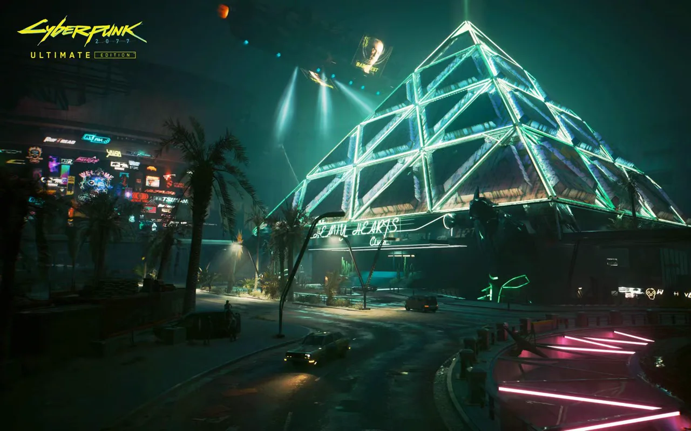
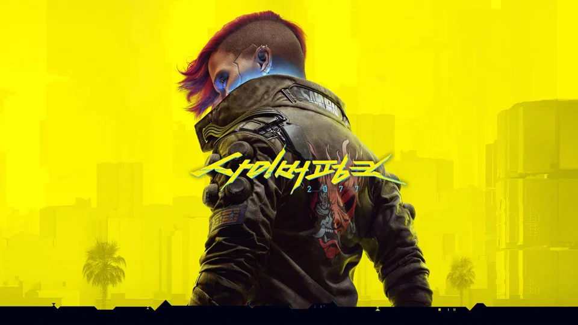
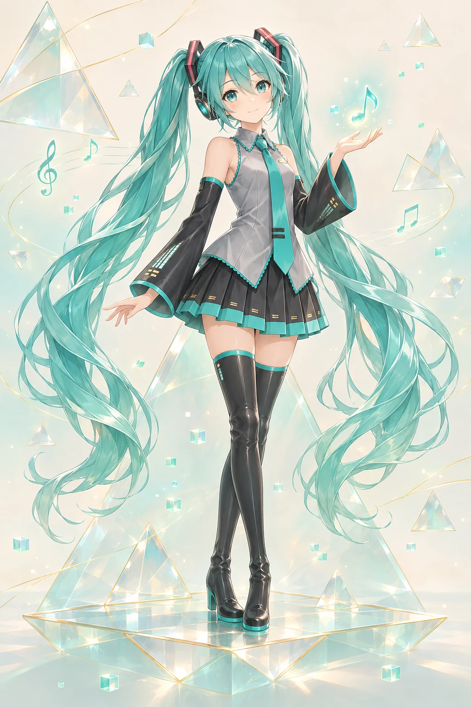

中央大厅
01 / WELCOME
欢迎来到玻璃之下。
这是一座以金字塔为入口的个人网站原型。你可以在庭院散步，走进大厅，也可以直接使用底部导航阅读。
当前文章为演示内容，方便体验空间与阅读流程；尚未填入你的正式文章和个人资料。
WASD 移动 · 拖动调整视角
V 切换视角 · 双击空格飞行
轻点地面移动，拖动调整视角。
双指缩放，在上方开启飞行。
01 / WELCOME
这是一座以金字塔为入口的个人网站原型。你可以在庭院散步，走进大厅，也可以直接使用底部导航阅读。
当前文章为演示内容，方便体验空间与阅读流程；尚未填入你的正式文章和个人资料。
02 / ARTICLES
在安静的展台前，打开一篇文章。
03 / PROJECTS
基于 Homecraft，将 NewHeaven 建筑几何接入可行走的三维个人空间。
这里预留给你的正式项目、截图、研究记录与代码链接。
04 / JOURNAL
这个区域可以收纳照片、旅行、阅读摘记和不需要结论的想法。窗外是水池，身边有一张坐下来的长椅。
COLLECTED / 01
从外部发现、读过并愿意推荐的内容：电子书、网络文章、仓库与论文。每一条都保留原始链接，并留下当时收藏它的理由。
WRITTEN / 02
自己写下的随笔、技术笔记与开发记录。文章以 Markdown 保存，分类、标签和全文阅读都在这一层完成。
ABOUT / Aletheia
自我介绍与社交账号有了独立的阅读页面，从这扇门继续。
场景引擎：Homecraft
当前 fork：Aletheiar/homecraft
建筑：NewHeaven / Louvre Craft
该版本用于本地体验；庭院留言簿通过 GitHub Discussions 保存留言，网站尚未发布到线上。
FRIENDS / DIRECTORY
友链收进一张目录：从这扇门进入目录页，再选择要去的站点。新增友链只需在目录页的数据文件里加一行，不必在大厅里再开一扇门。
目录中的站点为体验用示例，不代表真实好友。
WORKBENCH / GITHUB
工作站主屏幕通向我的 GitHub 主页。
LIVE RENDER TELEMETRY
下面这些数字由页面渲染器实时提供，用来观察这个场景的负载。
CYBERPUNK 2077 / ULTIMATE EDITION

图片来源：Cyberpunk 2077 Ultimate Edition 官方宣传图，版权归 CD PROJEKT RED 所有，仅作装饰展示。
CYBERPUNK 2077 / KEY ART

图片来源：Cyberpunk 2077 官方主视觉，版权归 CD PROJEKT RED 所有，仅作装饰展示。
沿着绿色传送门回到玻璃金字塔，回到你离开的那扇门前。
庭院唱片随时播放；也可以选本机音频，让音乐陪你在庭院里散步。本机文件不会离开这台设备。
支持 MP3、WAV、FLAC 等格式，也可一次导入整个音乐文件夹。
路过这里，留下一张明信片吧。使用 GitHub 登录后留言，也可以看看其他来访者留下的话。
为这个空间生成的同人装饰插画。悬挂在大厅上空，地面仍然保持开阔。

ORI AND THE WILL OF THE WISPS / 奥日与萤火意志
游戏艺术收藏
来自《奥日与萤火意志》的灵性雕塑展品，象征轻盈、自然与微光中的希望。
Ori 角色模型：vincentskc · CC BY 4.0。原模型以《Ori and the Blind Forest》中的 Ori 为题；此处调整比例、朝向与材质，并重新设计灵木与底座。